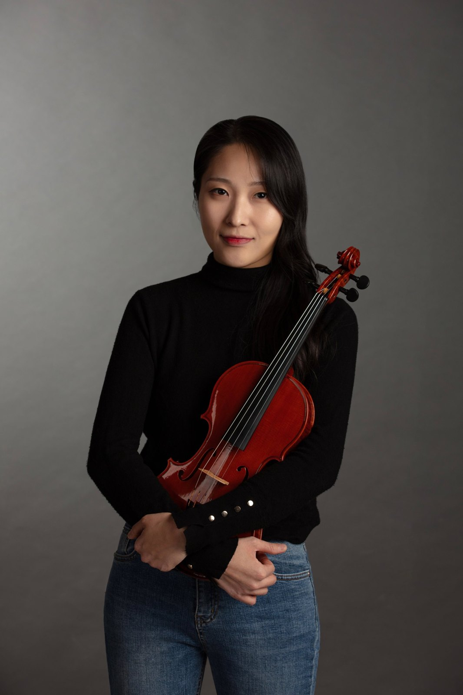

사진 — 제작자 제공
악기 제작
박현정 Hyunjung Park
1990년 인천에서 태어난 박현정은 일곱 살부터 바이올린을 배우고 오케스트라에서 연주하다 제작으로 방향을 바꿨다. 2011년 크레모나 이스티투토 스트라디바리에 입학해 A.N.L.A.I. 콩쿠르와 제8회 세스토 피오렌티노 콩쿠르에서 수상했고, 아카데미아 크레모넨시스에서 바이올린과 활 제작 과정을 마쳤다. 이후 아모림 파인 바이올린스에서 복제와 앤티크 스타일 악기를 전문으로 일했다. 2024년 제17회 크레모나 트리엔날레에서 금메달과 최우수 바니시상을 받았다. 이광훈과 공동으로 악기를 만들기도 한다.
작품


딜러
로스앤젤레스